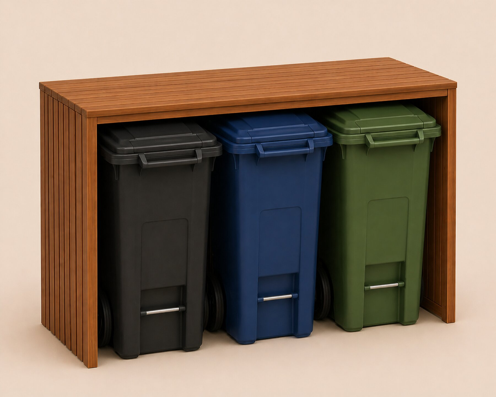
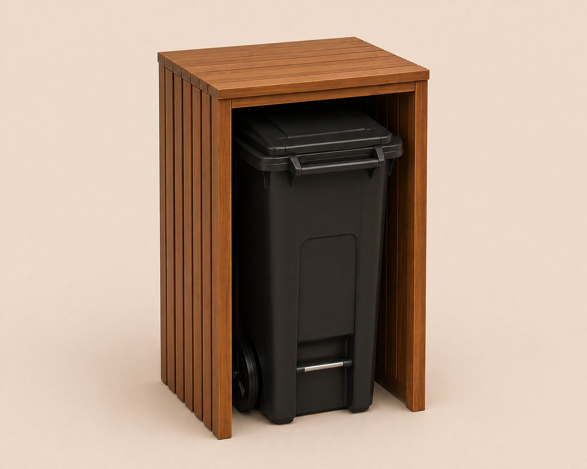
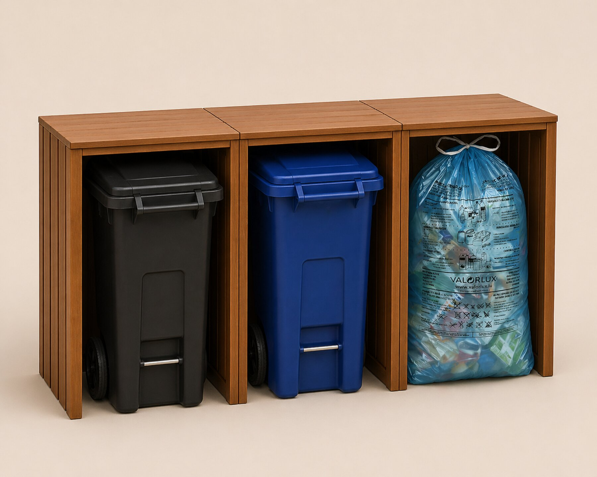
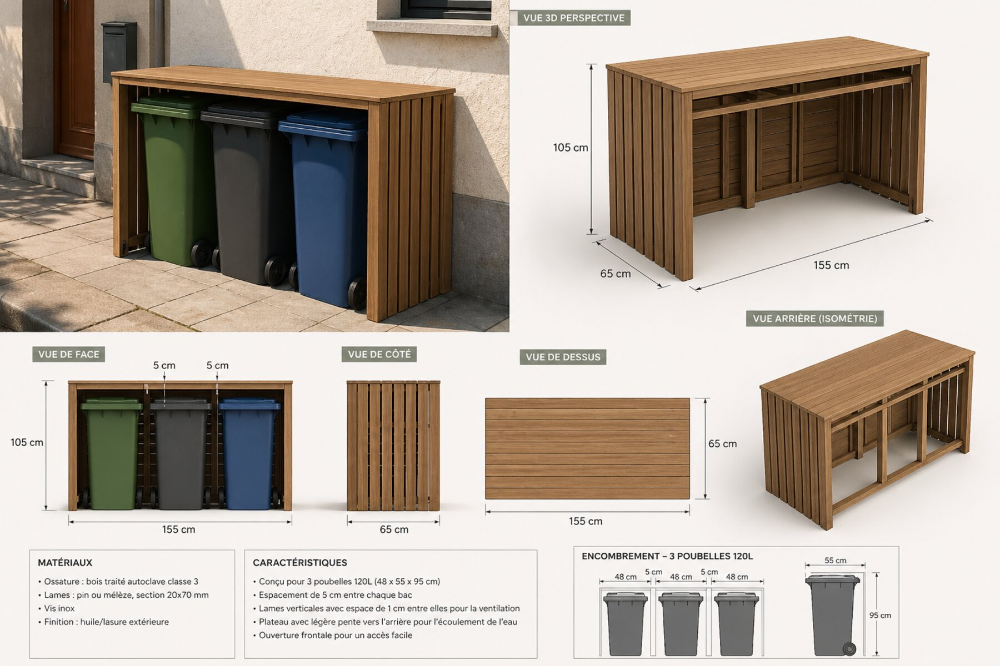

Urbox dans la rue.

Caches-poubelles, abris-vélos, micro-bibliothèques, bacs à fleurs. Fabriqué au Luxembourg.
Luxembourg soigne son espace public — pierre, signalétique, gestion forestière, végétalisation. Mais à l'échelle de la rue résidentielle, un objet trahit cet effort : la poubelle individuelle, plastique, alignée le long des façades.
Cette présence, banale prise séparément, devient un signal visuel dominant lorsqu'elle se répète.
Bacs sur trottoirs étroits, alignements peu lisibles.
Couleurs, tailles, opérateurs — incohérence visuelle.
Conflits piétons, poussettes, PMR les jours de collecte.

L'objet Urbox — vue 3D, configuration 3 bacs.
Une structure-cadre commune, déclinée selon l'usage. Le bois lamellé domine la lecture, la quincaillerie inox reste discrète : la boîte reste ouverte sur l'avant, sans porte — accès direct, ventilation naturelle, manipulation immédiate les jours de collecte.
Caches-poubelles, abris-vélos, micro-bibliothèques, bacs à fleurs — la même grammaire de bois pour quatre usages civiques.
Chaque Urbox peut être commandée en module unitaire. Plusieurs modules se clipsent côte à côte, sans visserie visible, pour composer la configuration souhaitée.


Une plateforme de configuration en ligne sera mise en place pour personnaliser la commande — choix du nombre de modules et des fonctions associées (poubelles, vélo, livres, fleurs, dépôt solidaire) — et obtenir un devis estimatif immédiat.
Cliquez sur un onglet pour explorer chaque modèle : dimensions, capacité, options.

Tri 3 flux. Façade ouverte, manipulation directe par l'opérateur.
Un mobilier civique en bois, cohérent et photographiable, qui prolonge la signature de soin urbain de la Ville.
Réduction immédiate de la pollution visuelle des bacs. Sentiment d'ordre dans la rue résidentielle.
Une seule famille d'objets pour caches-poubelles, abris-vélos, boîtes à livres, bacs à fleurs.
Stationnement vélo qualitatif, en cohérence avec le Plan National Mobilité.
Boîtes à livres, dépôts solidaires, bacs floraux — gestes d'appropriation citoyenne.
Bois certifié PEFC/FSC, fabrication au Luxembourg, économie circulaire régionale.
Pose sans génie civil lourd dans la majorité des cas — pilote en deux rues, déploiement par secteurs.
Validation par le Service Urbanisme. Mise en relation avec Voirie, Hygiène, Bâtiments. Calage des contraintes techniques.
Bonnevoie, Limpertsberg ou Pfaffenthal. Mesure d'usage, retours riverains, ajustements design.
Si pilote concluant : extension par secteurs. Industrialisation locale. Fonctions civiques complémentaires (livres, fleurs, dépôts).
Pour toute question, demande de précision technique, ou suite à donner. Je reste à votre disposition pour présenter le projet en réunion ou fournir un dossier technique détaillé.